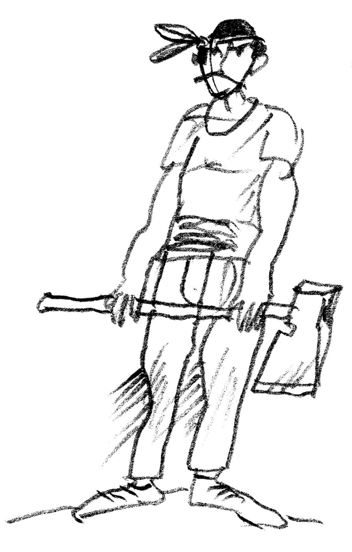

ÚVOD
Kniha „Národ slovenskí:
Baču Jana príhoďi a skúsenosťi“ mapuje životný príbeh
najslávnejšieho slovenského baču od jeho narodenia,
až za hrob. Ešte nikdy v dejinách slovenskej literatúry
nebol jeho život popísaný tak podrobne a ucelene.
Kniha je plná dramatických udalostí, nečakaných zvratov,
aj múdrych ponaučení. Márne by ste v nej však hľadali
zápletku, zauzľovanie, či vyvrcholenie. Knihu môžete
otvoriť na ktorejkoľvek strane a zahĺbiť sa do jej čítania
bez toho, aby ste museli pátrať po kontexte.
Pozorný čitateľ si však iste povšimne jemné línie, ktoré
na seba nadväzujú a spriadajú obraz bačovho života, jeho
míľnikov, každodenných zvyklostí, predstavujú nám jeho
najbližších, jeho priateľov i nepriateľov.
Za pozornosť určite stojí aj originálny jazyk baču Jana,
ktorý vznikol spojením stredoslovenského nárečia (prevažne
z okolia Zvolena, Detvy a z Horehronia) a mierne
modifikovanej verzii gramatických pravidiel, ktoré zaviedol
Anton Bernolák.